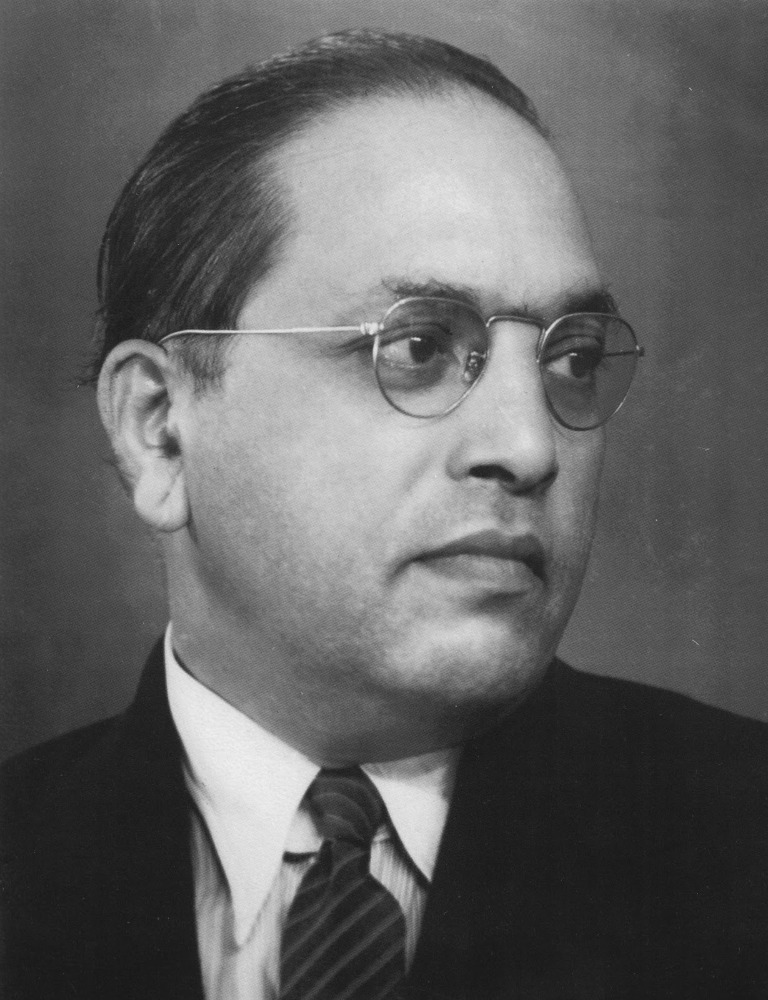

Dr. B.R. Ambedkar
14 April 1891 – 6 December 1956
Architect of the Indian Constitution
Early Life
Born into a Dalit (formerly "untouchable") family in Mhow, Madhya Pradesh, Bhimrao Ramji Ambedkar faced caste discrimination from childhood. Despite immense social barriers, he excelled academically, earning doctorates from Columbia University and the London School of Economics.
Fight for Dalit Rights
Ambedkar dedicated his life to eradicating caste discrimination. He led the Mahad Satyagraha (1927) for the right of Dalits to drink water from public tanks, and the temple entry movements. He famously said, "I like the religion that teaches liberty, equality and fraternity."
Architect of the Constitution
As Chairman of the Drafting Committee of the Constituent Assembly, Ambedkar was the principal architect of the Indian Constitution, ensuring fundamental rights, abolition of untouchability, and affirmative action for disadvantaged communities.
Conversion to Buddhism
On 14 October 1956, Ambedkar converted to Buddhism along with hundreds of thousands of followers, rejecting Hinduism's caste hierarchy. This sparked a mass conversion movement that continues to this day.
Legacy
Dr. Ambedkar is revered as a symbol of social justice and equality. His birthday (14 April) is celebrated as Ambedkar Jayanti across India. His writings on caste, democracy, and human rights remain profoundly influential worldwide.